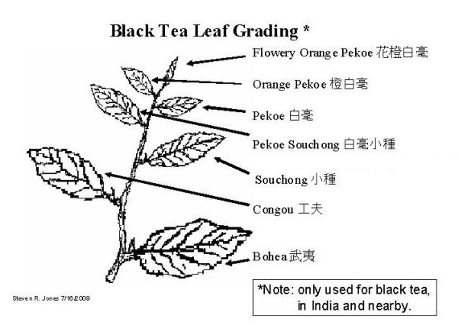

Oznaczenia
Herbata kupowana w specjalistycznych sklepach posiada unikalne oznaczenia.
Są to skróty angielskich terminów, określających klasę herbaty ze względu na rodzaj i wygląd liści.
Występująca za oznaczeniem gradacji cyfra „1”, oznacza najlepszą partię w danym zbiorze.
Poniższe oznaczenia odnoszą się do herbat czarnych pochodzących z Indii i Cejlonu.
Herbata o całych liściach

- P (Pekoe) – herbata o krótkich, delikatnych liściach;
- S (Souchong) – herbata o dużych liściach, zwijanych podłużnie, przez co otrzymuje się nierówne kawałki.
Często są to herbaty o charakterystycznym,
dymnym aromacie, uzyskanym przez wędzenie liści w celu wysuszenia ich;
- FP (Flowery Pekoe) – liście zwija się w kulki;
- PS (Pekoe Souchong) – zawiera liście krótsze i twardsze niż Pekoe;
- OP (Orange Pekoe) – nazwa pochodzi od charakterystycznego pomarańczowego
koloru przetworzonych już długich,
spiczastych liści, rzadko zawiera pączki liściowe;
- FOP (Flowery Orange Pekoe) – herbata zrobiona z pączka oraz pierwszego liścia pędu. Zawiera młode, delikatne listki.
W smaku charakteryzuje się kwiatową nutą;
- GFOP (Golden Flowery Orange Pekoe) – herbata FOP, zawierająca dodatkowo złote pączki, dla polepszenia jej jakości;
- TGFOP (Tippy Golden Flowery Orange Pekoe) – herbata zawierająca dużą ilość pączków;
- FTGFOP (Finest Tippy Golden Flowery Orange Pekoe) – herbata FOP o bardzo
wysokiej jakości, zawierająca dużą ilość pączków;
- SFTGFOP (Special Finest Tippy Golden Flowery Orange Pekoe) – najwyższej jakości, specjalnie wyselekcjonowana herbata, zawierająca pączki o kwiatowej nucie.
Herbata łamana
W przypadku herbat łamanych, do ich oznaczenia, dodaje się literkę B (ang. broken – łamane). Znaczenie pozostałych symboli nie zmienia się.
- BP (Broken Pekoe);
- BPS (Broken Pekoe Souchong);
- BOP (Broken Orange Pekoe);
- FBOP (Flowery Broken Orange Pekoe);
- GFBOP (Golden Flowery Broken Orange Pekoe);
- GBOP (Golden Broken Orange Pekoe);
- TGBOP (Tippy Golden Broken Orange Pekoe);
- TGFBOP (Tippy Golden Flowery Broken Orange Pekoe).
Odsiewy/miał/pył
Są to okruchy liści (ang. fannings/fines – odsiewy/miał, dust – pył), pozostałość po produkcji herbat łamanych.
Uważana za herbatę o gorszej jakości. Jednak przez wzgląd na dostatecznie dużą powierzchnię parzenia oraz szybki czas zaparzania, są one stosowane w herbatach ekspresowych.
- OF (Orange Fannings);
- PF (Pekoe Fannings);
- BPF (Broken Pekoe Fannings);
- BOPF (Broken Orange Pekoe Fannings);
- RD (Red Dust);
- FD (Fine Dust);
- GD (Golden Dust);
- SRD (Super Red Dust);
- SFD (Super Fine Dust);
- BMF (Broken Mixed Fannings).
Źródło: Wikipedia